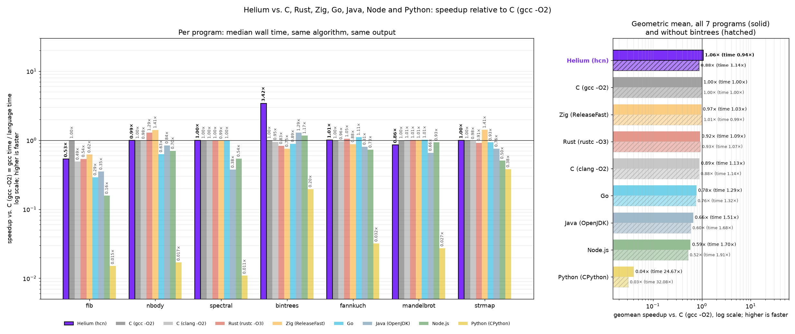

PLAIN PHRASES IN, REAL HELIUM OUT • EVERY LIBRARY FUNCTION COMPILED AND TESTED • 4,189 VERIFIED FUNCTIONS SO FAR
Gold turns short sentences into Helium programs. Each phrase names one function by its verb, noun, modifier and context. Gold looks the phrase up, fills in its slots, and writes out the Helium that function stands for. Chain a few sentences and you get a full program, compiled to a native binary by the Helium compiler.
Every function answers to two or more phrasings, like “run function x until y” or “keep running x until y”. Each phrase shape points to exactly one function.
The output is ordinary Helium you can read, edit and keep. A 5-line Gold script below expands to a 169-line program.
No function enters the library until its Helium compiles and prints exactly what its tests expect.
The functions are written with AI help and checked by the compiler. The goal is hundreds of thousands of them.
Every function is filed under four words: a verb (what it does), a noun (what it works on), a modifier (how) and a context (where it belongs). The vocabulary has 40 verbs, 53 nouns, 25 modifiers and 16 contexts, so there is room for 848,000 distinct function shapes. Slots in braces take numbers, text or other functions.
| Part | Value |
|---|---|
| Verb | map |
| Noun | head |
| Modifier | at least |
| Context | stats |
| Phrases | “map head elements at least {cutoff} using {f}”, “transform head items at least {cutoff} with {f}”, “apply {f} to head values at least {cutoff}” |
| Slots | cutoff (a number), f (a function) |
THE LIBRARY ENTRY (ITS HELIUM TEMPLATE FOLLOWS IN THE FILE)
@entry b075d68fea49fc92
kind: step
verb: map
noun: head
modifier: at_least
context: stats
phrase: map head elements at least {cutoff} using {f}
phrase: transform head items at least {cutoff} with {f}
phrase: apply {f} to head values at least {cutoff}
slot: cutoff int
slot: f fn
test: list=10,20,30,5,40 cutoff=10 f=double
expect: => i=3 r=0.0 ok=true s="mapped 3 head items" errors=0 n=5 res=[20,40,60,5,40] cache=0 hits=0
test: list=6,8,2 cutoff=5 f=inc
expect: => i=2 r=0.0 ok=true s="mapped 2 head items" errors=0 n=3 res=[7,9,2] cache=0 hits=0
This entry is one of the generated ones. Its two tests run the finished Helium on small inputs and compare every byte it prints with the expected line.
Five lines of Gold. The first three bind names to library functions, the fourth sets the input, and the last sentence chains five steps.
GOLD SCRIPT
x = collatz step
y = reaches one
sub = digit sum
input = 6
Run function x until y, check errors and cache results, run subfunction, return results.
EXPANDED HELIUM (BINDINGS, STEPS AND MAIN; A 56-LINE SHARED PRELUDE COMES FIRST, 169 LINES IN ALL)
// ===== Gold bindings =====
// x = collatz step [lib/core.gold d3bc44730580fd40]
fn gold_x(n int) int {
if n % 2 == 0 {
return n / 2;
}
3 * n + 1
}
// y = reaches one [lib/core.gold de2e52c0230faea9]
fn gold_y(n int) bool {
let target = 1;
n == target
}
// sub = digit sum [lib/core.gold 7d0119d2ce9741c6]
fn gold_sub(n int) int {
var x = if n < 0 { -n } else { n };
var s = 0;
while x > 0 { s += x % 10; x /= 10; }
s
}
// ===== Gold steps =====
// step 0: run function x until y [lib/core.gold 344a32e952049c83]
fn gold_s0(g Gold&, v Val) Val {
var out = v;
var k = 0;
gold_push(g, out.i);
while !gold_y(out.i) {
out.i = gold_x(out.i);
gold_push(g, out.i);
k++;
if k >= 1000 {
gold_fail(g, "run until: stop condition never reached");
out.ok = false;
return out;
}
}
g.steps += k;
out.s.clear();
format(out.s, "ran ", k, " times");
out
}
// step 1: check errors [lib/core.gold 7483d6878ba653c1]
fn gold_s1(g Gold&, v Val) Val {
var out = v;
out.s.clear();
if g.errors > 0 {
print("error: ", g.err, " (", g.errors, " total)");
out.ok = false;
out.s.append("failed");
} else {
print("no errors in ", g.n, " results");
out.s.append("checked");
}
out
}
// step 2: cache results [lib/core.gold 15d66c27656e35f3]
fn gold_s2(g Gold&, v Val) Val {
var out = v;
for k in g.n { gold_cache_put(g, k, g.res[k]); }
print("cached ", g.n, " results");
out.i = g.n;
out
}
// step 3: run subfunction [lib/core.gold b4689485270b2e86]
fn gold_s3(g Gold&, v Val) Val {
var out = v;
let memo = 1099511627776;
let before = g.hits;
for k in g.n {
let x = g.res[k];
let c, hit = gold_cache_get(g, memo + x);
if hit {
g.res[k] = c;
} else {
let y = gold_sub(x);
gold_cache_put(g, memo + x, y);
g.res[k] = y;
}
}
print("subfunction ran on ", g.n, " results, ", g.hits - before, " memo hits");
out.i = g.n;
out
}
// step 4: return results [lib/core.gold 22627c5de82f0988]
fn gold_s4(g Gold&, v Val) Val {
var out = v;
var line byte[>..] = [];
var total = 0;
for k in g.n {
if k > 0 { line.append(","); }
format(line, g.res[k]);
total += g.res[k];
}
print("results: ", line);
out.i = total;
out.r = if g.n > 0 { total as real / g.n as real } else { 0.0 };
out.s.clear();
format(out.s, "returned ", g.n);
out
}
fn main() {
var g = gold_new();
var v = gold_val();
v.i = 6;
v = gold_s0(g, v);
v = gold_s1(g, v);
v = gold_s2(g, v);
v = gold_s3(g, v);
v = gold_s4(g, v);
gold_report(g, v);
}
OUTPUT OF THE COMPILED PROGRAM
no errors in 9 results
cached 9 results
subfunction ran on 9 results, 0 memo hits
results: 6,3,1,5,7,8,4,2,1
=> i=37 r=4.111111111111111 ok=true s="returned 9" errors=0 n=9 res=[6,3,1,5,7,8,4,2,1] cache=18 hits=0
The Collatz run from 6 visits 6, 3, 10, 5, 16, 8, 4, 2, 1. The digit-sum step turns those into 6, 3, 1, 5, 7, 8, 4, 2, 1. The last line is Gold’s report on the program’s shared state.
A second script uses the generated “map head … at least” entry from above. It maps values from the front of the list while they are at least 10, then stops.
GOLD SCRIPT
f = digit sum
list = 19,28,37,8,40
map head elements at least 10 using f
return results
OUTPUT
results: 10,10,10,8,40
=> i=78 r=15.6 ok=true s="returned 5" errors=0 n=5 res=[10,10,10,8,40] cache=0 hits=0
EXPANDED HELIUM (115 LINES WITH THE PRELUDE)
// ===== Gold bindings =====
// f = digit sum [lib/core.gold 7d0119d2ce9741c6]
fn gold_f(n int) int {
var x = if n < 0 { -n } else { n };
var s = 0;
while x > 0 { s += x % 10; x /= 10; }
s
}
// ===== Gold steps =====
// step 0: map head elements at least 10 using f [lib/gen/shard-0001.gold b075d68fea49fc92]
fn gold_s0(g Gold&, v Val) Val {
var out = v;
let lim = 10;
var count = 0;
for k in g.n {
if g.res[k] >= lim {
g.res[k] = gold_f(g.res[k]);
count++;
} else {
break;
}
}
g.steps += count;
out.i = count;
out.s.clear();
format(out.s, "mapped ", count, " head items");
out
}
// step 1: return results [lib/core.gold 22627c5de82f0988]
fn gold_s1(g Gold&, v Val) Val {
var out = v;
var line byte[>..] = [];
var total = 0;
for k in g.n {
if k > 0 { line.append(","); }
format(line, g.res[k]);
total += g.res[k];
}
print("results: ", line);
out.i = total;
out.r = if g.n > 0 { total as real / g.n as real } else { 0.0 };
out.s.clear();
format(out.s, "returned ", g.n);
out
}
fn main() {
var g = gold_new();
var v = gold_val();
gold_push(g, 19);
gold_push(g, 28);
gold_push(g, 37);
gold_push(g, 8);
gold_push(g, 40);
v = gold_s0(g, v);
v = gold_s1(g, v);
gold_report(g, v);
}
Both programs were expanded by the Gold compiler, built with the Helium compiler and run to produce the output shown.
A function is written with AI help, but nothing is trusted until the Helium compiler builds it and the program prints the right answer.
| Check run for this page | Result |
|---|---|
| Library entries rebuilt from scratch and run against their tests (4,189 generated + 9 core) | 4,198 of 4,198 passed |
| Individual tests | 8,396 of 8,396 passed |
| Example scripts in the repository (4 to 9 lines each, 115 to 189 lines of Helium each) | 52 of 52 exact |
Library snapshot of October 31, 2026. Rebuilt with the Helium compiler from the public repository at commit 69da7253.
Everything Gold writes is Helium, so here is how Helium performs. Seven classic benchmark programs, the same algorithm and the same output in every language, timed on one computer.

| Language | Speed vs C (gcc -O2), all 7 | Without bintrees |
|---|---|---|
| Helium (hcn) | 1.06× | 0.88× |
| C (gcc -O2) | 1.00× | 1.00× |
| Zig (ReleaseFast) | 0.97× | 1.01× |
| Rust (rustc -O3) | 0.92× | 0.93× |
| C (clang -O2) | 0.89× | 0.88× |
| Go | 0.78× | 0.76× |
| Java (OpenJDK) | 0.66× | 0.60× |
| Node.js | 0.59× | 0.52× |
| Python (CPython) | 0.04× | 0.03× |
Higher is faster. Geometric mean of median wall time over fib, nbody, spectral, bintrees, fannkuch, mandelbrot and strmap. Each time is the median of 5 runs after a warm-up, with process start-up included, and every program’s output matched C’s byte for byte. One honest catch: bintrees helps Helium a lot (261 ms against 892 ms for gcc) because Helium allocates from a pool per function; a C version using an arena runs it in 129 ms. Without bintrees Helium lands with clang, below gcc and Rust. On fib, gcc wins by about 2× (126 ms against 235 ms). Measured October 31, 2026 on an 8-thread Intel Xeon with 15.6 GiB, Debian 13, pinned to four cores, on a computer in normal use.
Two games published by Amni-Scient have a Helium port next to the original, with a test program that prints the same trace on both sides. Both sides were built with their normal release settings and run 9 times after a warm-up; the table shows the median. The output was identical in every run.
| App and workload | Original | Helium | Helium speed |
|---|---|---|---|
| Waystone: plan and build the massif world, then 4,000 terrain queries | 2,577 ms (JavaScript, Node) | 1,302 ms | 1.98× faster |
| Waystone: same for the archipelago world | 1,593 ms (JavaScript, Node) | 627 ms | 2.54× faster |
| Waystone: same for the corkscrew world | 2,232 ms (JavaScript, Node) | 1,161 ms | 1.92× faster |
| Pom-Pom Grove: 8 garden simulations, 36,000 ticks each | 1,442 ms (Rust) | 1,600 ms | 0.90× (10% slower) |
| Size | Original | Helium | Helium / original |
|---|---|---|---|
| Waystone world code (everything the test program imports) | 435,133 bytes, 6,595 lines (JS) | 377,657 bytes, 7,177 lines | 0.87× bytes |
| Pom-Pom Grove simulation, hand-written code | 218,534 bytes, 2,823 lines (Rust) | 180,959 bytes, 3,293 lines | 0.83× bytes |
| Pom-Pom Grove simulation with its data tables | 274,063 bytes (Rust + data files) | 332,322 bytes (tables generated) | 1.21× bytes |
| Pom-Pom Grove garden test program, binary | 1,854,736 bytes (stripped) | 1,093,632 bytes (static) | 0.59× |
The trade so far: Helium code is smaller in bytes but runs to more lines. The Waystone port also carries its own bit-exact copy of the browser’s math functions, which the JavaScript gets for free, so the worlds match exactly between the two versions. The Rust binary links the system C library; the Helium binary is fully static. Measured October 31, 2026 on the same Xeon computer as the benchmark above, pinned to four cores, with Node 24.22.1, Rust 1.99.1 and the Helium compiler at commit 69da7253. Other ports (the mail app core, the web UI kit, the full game builds) don’t have a like-for-like test yet and are left out.
Peak memory (maximum resident set size) for the same runs, same inputs and same computer, read with GNU time. Median of 7 runs after a warm-up; the output was again identical on both sides in every run.
| App and workload | Original | Helium | Helium memory |
|---|---|---|---|
| Waystone: massif world | 87.9 MiB (JavaScript, Node) | 6.4 MiB | 13.8× less |
| Waystone: archipelago world | 113.1 MiB (JavaScript, Node) | 8.0 MiB | 14.1× less |
| Waystone: corkscrew world | 86.7 MiB (JavaScript, Node) | 6.1 MiB | 14.3× less |
| Pom-Pom Grove: 8 garden simulations | 3.9 MiB (Rust) | 1.6 MiB | 2.4× less in total, about even in private memory |
| Empty program, for reference | 41.2 MiB (node -e 0), 1.9 MiB (Rust) | 0.7 MiB |
A fair reading: 41 MiB of every Node figure is the runtime itself, before any game code runs. Taking each side’s empty program away, Waystone still uses 8 to 10× less in Helium (5.4 to 7.3 MiB against 45.5 to 71.8 MiB), and Node’s peak also depends on when its garbage collector runs. Pom-Pom Grove is close to a tie: most of the Rust figure is the shared system C library mapped into the process; counting only private memory, Helium uses slightly more (0.86 MiB against 0.71 MiB). Both numbers are within about 2 MiB of an empty program. Cross-checked with cgroup memory accounting and per-process memory counters, which agree on all of this. Measured October 31, 2026.
| Measure | JavaScript (Node) | Helium | Result |
|---|---|---|---|
| World test, median time (massif / archipelago / corkscrew) | 2,577 / 1,593 / 2,232 ms | 1,302 / 627 / 1,161 ms | Helium 1.9 to 2.5× faster |
| World test, peak memory (massif / archipelago / corkscrew) | 87.9 / 113.1 / 86.7 MiB | 6.4 / 8.0 / 6.1 MiB | Helium about 14× less |
| Start-up of an empty program | 20.8 ms | 1.4 ms | Helium faster |
| World code, bytes | 435,133 | 377,657 | Helium 13% smaller |
| World code, lines | 6,595 | 7,177 | Helium 9% longer |
| What the test needs to run | 435,133 bytes of source plus the 126.9 MB Node runtime | one 2.36 MB static binary | Not a like-for-like size |
The full game is not compared yet: the Helium build is not at feature parity with the JavaScript one, and it carries its own renderer and platform layer that the browser build gets from the browser. Node 24.22.1, Helium compiler at commit 69da7253, Waystone port at the commit that matches JavaScript upstream b25e86b1.
4,189 generated functions verified, plus a small hand-written core. 52 example scripts expand and run exactly.
Keep generating and verifying until the library covers hundreds of thousands of functions across the 848,000 possible shapes.
A model that turns free-form requests into Gold phrases is being retrained. Its training data is still being generated, so no accuracy figure is published yet.
A compiled programming language with no garbage collector, built so AI assistants can learn it from one short guide. It compiles to native binaries. The compiler is open source under the Apache 2.0 license at github.com/Amnibro/helium.
The library functions are drafted with AI help. None is accepted on trust: each one is compiled and its tests are run, and it only joins the library if every test prints exactly the expected output.
Yes. The output is plain Helium with a comment above each function naming the entry it came from.
Not yet. Gold is in development. This page shows where it stands today.
Last updated